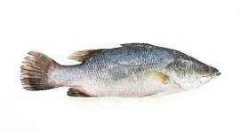
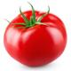
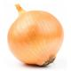
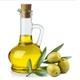
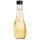
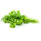

VOLTAR
Muqueca de peixe fácil
Ingredientes:
1 kg de peixe cação em postas
1 pimentão verde em rodelas
 1 pimentão vermelho em rodelas
1 pimentão vermelho em rodelas
 1 pimentão amarelo em rodelas
1 pimentão amarelo em rodelas
1 tomate em rodelas
1 cebola em rodelas
1 fio de azeite de oliva
 molho shoyu
molho shoyu
vinagre (ou limão)
açafrão
 sal
sal
 pimenta-do-reino
pimenta-do-reino
1 maço de coentro
 1 maço de cebolinha
1 maço de cebolinha
 1 tablete de caldo de peixe (ou camarão ou frango)
1 tablete de caldo de peixe (ou camarão ou frango)
 vidro pequeno que leite de coco (200 ml)
vidro pequeno que leite de coco (200 ml)
Mode de Preparo:
1 - Em uma panela (de preferência que seja de barro) coloque no fundo uma camada de cebola, tomate e pimentões coloridos.
2 - Coloque as postas de peixe.
3 - Vamos temperar: um fio de azeite, um pouquinho de vinagre (ou limão), regue com molho shoyu, uma pitada de sal, uma pitada de açafrão; uma pitada de pimenta do reino (ou molho de pimenta).
4 - Coloque na panela o tablete de caldo de peixe (camarão ou frango).
5 - Coloque o restante das rodelas de cebola, tomate e pimentões;
6 - Lembre-se que o peixe pega tempero muito fácil e o que faz ficar gostoso é a suavidade no sabor, portanto coloque um pouquinho de cada ingrediente (sal, vinagre, azeite, shoyu, pimenta, açafrão).
7 - O peixe vai soltar uma água, tampe a panela e deixe cozinha até ficar mole, cuidado para não cozinhar muito e desfazer as postas. Se necessário coloque um pouquinho de água filtrada.
8 - Quando o peixe estiver cozido, tempere com o coentro e a cebolinha e derrame o leite de coco (que nesta receita pode ser opcional)
Servir com pirão e arroz branco.

Olavo Santos
BOM APETITE!
VOLTAR